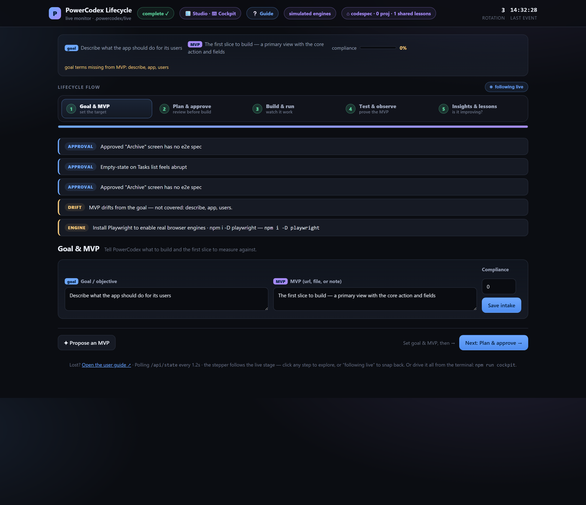
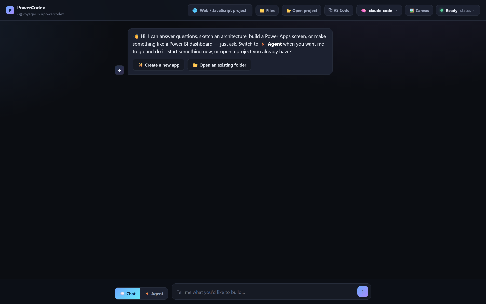
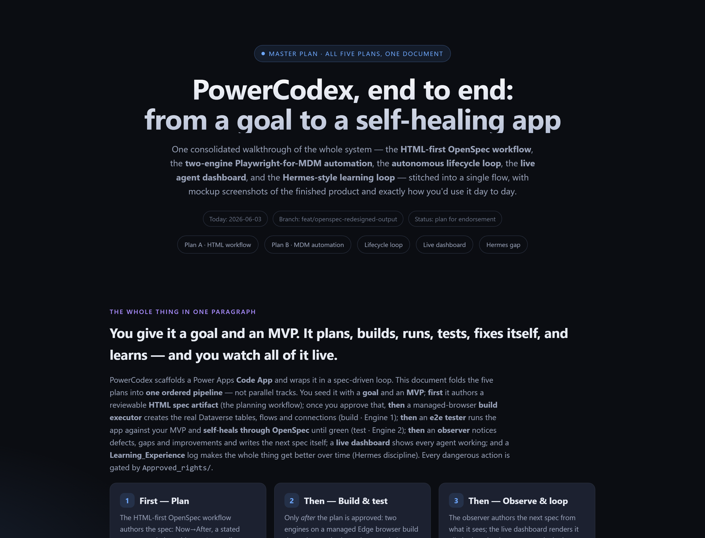
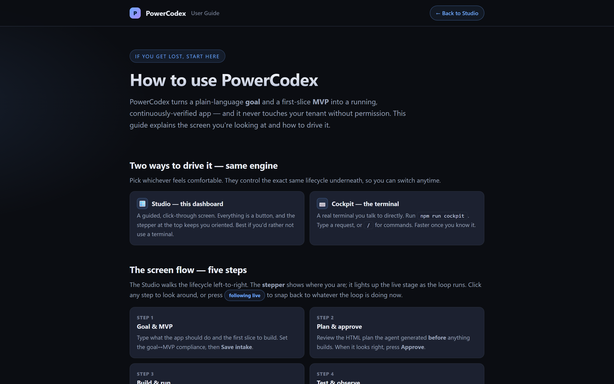

PowerCodex scaffolds a production-ready Power Apps Code App, captures your intent as reviewable OpenSpec artifacts, and then runs an autonomous lifecycle loop — plan, consent, build, run, test, learn — that you watch move on a live dashboard. Two inputs in: a goal and an approved MVP. A continuously-verified app out.

What it is
Most AI tools help you write code, then forget why. PowerCodex keeps the project's intent next to the code — as files you can review, change, implement, verify, and archive — and wraps the whole build in one observable loop. Ideas become specs, specs become a running app, and the app keeps proving it still meets the goal.
An OpenSpec config tuned for Code Apps and 11 OPSX prompt + skill files turn ideas into reviewable proposals, designs, and tasks.
The loop runs on its own but stops at a real consent gate before anything touches your tenant. It only does what you turned on.
When a test goes red, the e2e engine diagnoses it, authors a spec from the observation, and re-builds — and you watch it happen.
The product, on screen
Whether you live in a terminal or a browser, you're driving the same lifecycle. Here's what it actually looks like.
A zero-dependency dashboard at localhost:4321 streams every stage, agent, and event in real time — nothing happens off-screen.
The maker surface lets you talk to your AI of choice — sketch an architecture, draft a screen, or ask a question. Switch to Agent mode when you want it to go and do it. Nothing changes until you press Build.

When the agent shapes a change, it authors a comprehensive, reviewable HTML plan document — a real spec for the work, not a one-line echo. Review it before a single line is built.

A built-in guide explains the screen you're looking at and how to drive it — the two ways to run the loop, the five-step screen flow, and what each control does.

The loop
Each rotation moves through seven stages. The dashboard highlights the current stage live; when a rotation ends, observations feed the next one — defects, gaps, and improvements become the next plan.
Approved_rights/ before it builds or pushes. If the relevant flag (build / push / auto-respec / auto-fix) is false, the loop blocks right there and waits for you.
What you get
A Microsoft-based Code Apps starter, customized and owned in-repo.
Security and quality automation ship with every project.
All 11 OPSX prompt files and matching OpenSpec skill folders under .github/ — explore, propose, verify, apply, sync, archive.
Connectors for runtime data, Power-Platform-managed auth, and pac code init for deploy. No custom backend, no custom auth.
Quick start
PowerCodex is an npm initializer plus a small zero-dependency lifecycle tool. Scaffold a project, then open the dashboard and drive the loop.
# global install npm install -g @voyager163/powercodex@latest powercodex my-app cd my-app && code . # or without installing npx @voyager163/powercodex my-app
# Power Platform CLI pac code init --environment <id> \ --displayName <appName> # start local development npm run dev
npm run lifecycle:serve # http://localhost:4321 — keep it open npm run lifecycle -- loop # run the loop; the dashboard follows live npm run lifecycle:selftest # run the product against itself (16/16 checks)
npm run lifecycle -- import --analyze reads your existing routes, components, and data calls into a digest, then derives user stories and an MVP grounded in your real code — so the same loop can run the rest of that project.
Open source, MIT licensed. Start a new project or wire the lifecycle into one you already have.